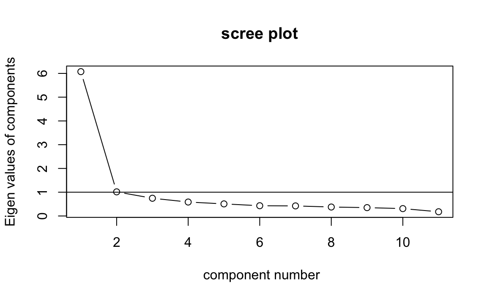
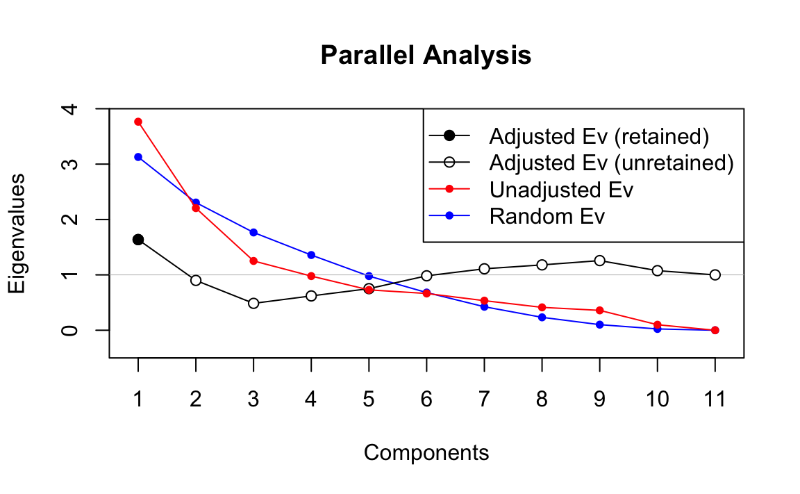

16.5 Test di bontà di adattamento
Se si assume la normalità distributiva dei dati è possibile valutare la bontà di adattamento attraverso il test del rapporto di verosimiglianze. L’ipotesi nulla postula che la matrice di covarianza delle \(Y\) abbia la forma specificata dal modello fattoriale, ossia
\[H_0: \boldsymbol{\Sigma} = \boldsymbol{\Lambda} \boldsymbol{\Lambda}^{\ensuremath{\mathsf{T}}} + \boldsymbol{\Psi},\]
ovvero che \(m\) fattori comuni siano sufficienti per spiegare la struttura di interdipendenza della variabile casuale \(Y\) oggetto di osservazione campionaria. L’alternativa è che \(m\) fattori comuni non siano sufficienti a tale spiegazione
\[H_1: \boldsymbol{\Sigma} \neq \boldsymbol{\Lambda} \boldsymbol{\Lambda}^{\ensuremath{\mathsf{T}}} + \boldsymbol{\Psi},\]
dove \(\boldsymbol{\Lambda}\) è di ordine \(p \times m\). Se l’ipotesi nulla non viene rifiutata vuol dire che il modello fornisce un buon adattamento ai dati.
Sotto l’ipotesi nulla, il test ha una distribuzione asintotica, per \(n \rightarrow \infty\), di tipo chi quadrato con gradi di libertà pari a:
\[\nu=\frac{1}{2}\left[ (p-m)^2 - (p - m) \right].\]
Tale risultato di natura asintotica, valido per \(n\) grande, può essere migliorato, per ottenere una approssimazione migliore, sostituendo \(\nu\) con: \[\nu^* = n - 2 - \frac{2p-1}{6}-\frac{2}{3}m.\] Il rifiuto di \(H_0\) implica che \(m\) è troppo piccolo e un numero maggiore di fattori è necessario. Solitamente si inizia l’analisi considerando un numero di fattori molto piccolo: \(m^*=1\) e si prende come ipotesi per il test che il numero di fattori sia \(m^*\). Se l’ipotesi nulla è accettata il procedimento si arresta, altrimenti si passa a considerare \(m^* + 1\) fattori e si prosegue con lo stesso ragionamento. Il procedimento si arresta non appena si verifica una delle seguenti situazioni: è stata accettata l’ipotesi \(H_0\) per un certo valore di \(m\), oppure, \(\nu=\frac{1}{2}\left[ (p-m)^2 - (p - m) \right]=0\), ossia la variabile \(\chi^2\) dovrebbe avere zero gradi di libertà, che non è possibile.
Per poter applicare il test che determina il buon grado di adattamento del modello fattoriale occorre che i gradi di libertà della statistica del chi-quadrato siano positivi. Questo sta a significare che il numero di fattori comuni non può superare il più grande numero intero che soddisfa la seguente equazione:
\[m < \frac{1}{2} \left( 2p+1-\sqrt{8p+1} \right)\]
per un numero fissato \(p\) di variabili manifeste. In pratica, quando \(n\) è grande, il test basato sul rapporto di verosimiglianze rivela un numero di fattori maggiore degli altri metodi descritti in precedenza. Alcuni considerano dunque il valore \(m\) indicato dal test quale limite superiore del numero dei fattori che rivestono una qualche importanza pratica.
Per alcuni campioni di dati, la scelta di \(m\) non è ovvia. Questa indeterminazione costituisce un limite dell’analisi fattoriale. Solitamente, si procede con utilizzando un certo metodo per la scelta di \(m\) (diciamo lo scree test) e valuta la proporzione di varianza spiegata di ciascun item e, dopo un’appropriata rotazione, l’interpretabilità della soluzione ottenuta. Se le comunalità o l’interpretabilità dei fattori non sembrano adeguati, si procede con un numero maggiore di fattori. Tale procedura è certamente soggettiva e i limiti della soluzione che viene ottenuta sono evidenti.
Per altri campioni di dati, la scelta di \(m\) consente una maggiore certezza. Questo avviene quando tutti i metodi che abbiamo descritto prima forniscono la stessa risposta. In questi casi, possiamo essere più certi della soluzione dell’analisi fattoriale.
Esempio 16.1 Per confrontare i quattro metodi discussi per la scelta del numero \(m\) di fattori usiamo qui una matrice di correlazioni calcolata sulla WAIS. Le 11 sottoscale sono le seguenti:
- X1 = Information
- X2 = Comprehension
- X3 = Arithmetic
- X4 = Similarities
- X5 = Digit.span
- X6 = Vocabulary
- X7 = Digit.symbol
- X8 = Picture.completion
- X9 = Block.design
- X10 = Picture.arrangement
- X11 = Object.assembly
varnames <- c(
"IN", "CO", "AR", "SI", "DS", "VO", "SY", "PC",
"BD", "PA", "OA", "AG", "ED"
)
temp <- matrix(c(
1, 0.67, 0.62, 0.66, 0.47, 0.81, 0.47, 0.60, 0.49, 0.51, 0.41,
-0.07, 0.66, .67, 1, 0.54, 0.60, 0.39, 0.72, 0.40, 0.54, 0.45,
0.49, 0.38, -0.08, 0.52, .62, .54, 1, 0.51, 0.51, 0.58, 0.41,
0.46, 0.48, 0.43, 0.37, -0.08, 0.49, .66, .60, .51, 1, 0.41,
0.68, 0.49, 0.56, 0.50, 0.50, 0.41, -0.19, 0.55, .47, .39, .51,
.41, 1, 0.45, 0.45, 0.42, 0.39, 0.42, 0.31, -0.19, 0.43,
.81, .72, .58, .68, .45, 1, 0.49, 0.57, 0.46, 0.52, 0.40, -0.02,
0.62, .47, .40, .41, .49, .45, .49, 1, 0.50, 0.50, 0.52, 0.46,
-0.46, 0.57, .60, .54, .46, .56, .42, .57, .50, 1, 0.61, 0.59,
0.51, -0.28, 0.48, .49, .45, .48, .50, .39, .46, .50, .61, 1,
0.54, 0.59, -0.32, 0.44, .51, .49, .43, .50, .42, .52, .52, .59,
.54, 1, 0.46, -0.37, 0.49, .41, .38, .37, .41, .31, .40, .46, .51,
.59, .46, 1, -0.28, 0.40, -.07, -.08, -.08, -.19, -.19, -.02,
-.46, -.28, -.32, -.37, -.28, 1, -0.29, .66, .52, .49, .55, .43,
.62, .57, .48, .44, .49, .40, -.29, 1
), nrow = 13, ncol = 13, byrow = TRUE)
colnames(temp) <- varnames
rownames(temp) <- varnames
wais_cor <- temp[1:11, 1:11]
wais_cor
#> IN CO AR SI DS VO SY PC BD PA OA
#> IN 1.00 0.67 0.62 0.66 0.47 0.81 0.47 0.60 0.49 0.51 0.41
#> CO 0.67 1.00 0.54 0.60 0.39 0.72 0.40 0.54 0.45 0.49 0.38
#> AR 0.62 0.54 1.00 0.51 0.51 0.58 0.41 0.46 0.48 0.43 0.37
#> SI 0.66 0.60 0.51 1.00 0.41 0.68 0.49 0.56 0.50 0.50 0.41
#> DS 0.47 0.39 0.51 0.41 1.00 0.45 0.45 0.42 0.39 0.42 0.31
#> VO 0.81 0.72 0.58 0.68 0.45 1.00 0.49 0.57 0.46 0.52 0.40
#> SY 0.47 0.40 0.41 0.49 0.45 0.49 1.00 0.50 0.50 0.52 0.46
#> PC 0.60 0.54 0.46 0.56 0.42 0.57 0.50 1.00 0.61 0.59 0.51
#> BD 0.49 0.45 0.48 0.50 0.39 0.46 0.50 0.61 1.00 0.54 0.59
#> PA 0.51 0.49 0.43 0.50 0.42 0.52 0.52 0.59 0.54 1.00 0.46
#> OA 0.41 0.38 0.37 0.41 0.31 0.40 0.46 0.51 0.59 0.46 1.00Il primo metodo per la determinazione di \(m\) richiede di estrarre tanti fattori quanti sono necessari per spiegare una quota predeterminata della varianza totale. Supponiamo di porre il criterio pari all’80% della varianza totale. La soluzione ottenuta in questo modo ci porterebbe a mantenere \(m=5\) fattori:
out <- eigen(wais_cor)
sum(out$val[1:4]) / sum(out$val)
#> [1] 0.7656781
sum(out$val[1:5]) / sum(out$val)
#> [1] 0.8118853Il secondo metodo suggerisce di mantenere tutti gli autovalori superiori al valore medio degli autovalori (che, nel caso di R è uguale a \(1\)). Nel caso presente, \(m=2\):
round(out$values, 3)
#> [1] 6.074 1.015 0.746 0.587 0.508 0.431 0.423 0.377 0.351 0.310 0.177Il terzo metodo, lo scree test, può essere eseguito usando la funzione
VSS.scree() contenuta nel pacchetto psych.
VSS.scree(wais_cor)
Lo scree test suggerisce una soluzione a \(m=1\) fattori, come indicato
nella figura precedente. Il terzo metodo, nella versione della Parallel
Analysis, può essere eseguito usando la funzione paran() contenuta nel
pacchetto paran. La Parallel Analysis indica una soluzione a \(m=1\)
fattore.
library("paran")
paran(wais_cor, graph = TRUE)
#>
#> Using eigendecomposition of correlation matrix.
#> Computing: 10% 20% 30% 40% 50% 60% 70% 80% 90% 100%
#>
#>
#> Results of Horn's Parallel Analysis for component retention
#> 330 iterations, using the mean estimate
#>
#> --------------------------------------------------
#> Component Adjusted Unadjusted Estimated
#> Eigenvalue Eigenvalue Bias
#> --------------------------------------------------
#> 1 1.636878 3.765744 2.128865
#> --------------------------------------------------
#>
#> Adjusted eigenvalues > 1 indicate dimensions to retain.
#> (1 components retained)
Il quarto metodo consiste nell’applicazione di un test inferenziale relativo al numero di fattori. Anche questo metodo indica una soluzione a sei fattori:
factanal(covmat = wais_cor, factors = 5, n.obs = 933)
#>
#> Call:
#> factanal(factors = 5, covmat = wais_cor, n.obs = 933)
#>
#> Uniquenesses:
#> IN CO AR SI DS VO SY PC BD PA OA
#> 0.235 0.389 0.117 0.419 0.600 0.109 0.277 0.308 0.334 0.472 0.456
#>
#> Loadings:
#> Factor1 Factor2 Factor3 Factor4 Factor5
#> IN 0.745 0.264 0.301 0.192 0.118
#> CO 0.667 0.278 0.244 0.129 0.111
#> AR 0.378 0.236 0.814 0.145
#> SI 0.591 0.332 0.207 0.252 0.121
#> DS 0.288 0.208 0.366 0.341 0.155
#> VO 0.865 0.216 0.207 0.229
#> SY 0.251 0.364 0.153 0.708
#> PC 0.425 0.548 0.156 0.216 0.375
#> BD 0.246 0.708 0.230 0.201 0.107
#> PA 0.355 0.457 0.163 0.325 0.245
#> OA 0.211 0.664 0.128 0.205
#>
#> Factor1 Factor2 Factor3 Factor4 Factor5
#> SS loadings 2.799 1.986 1.176 1.043 0.280
#> Proportion Var 0.254 0.181 0.107 0.095 0.025
#> Cumulative Var 0.254 0.435 0.542 0.637 0.662
#>
#> Test of the hypothesis that 5 factors are sufficient.
#> The chi square statistic is 12.46 on 10 degrees of freedom.
#> The p-value is 0.256Le differenze tra i risultati ottenuti con i quattro metodi descritti sopra suggeriscono la presenza di una componente di arbitrarietà nella scelta della soluzione da adottare.